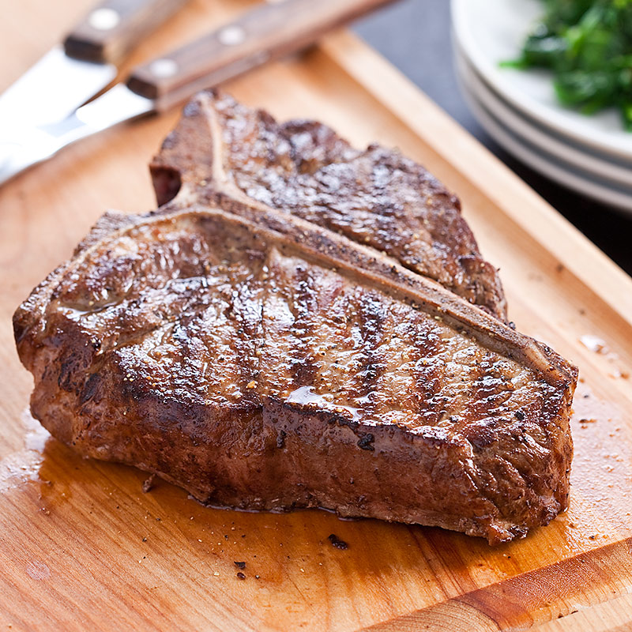

TBone Steak

T Bone Steak is the most versatile steak around. 10/10.
Ingredients
2 1lb. 1 in. steaks
1 tbsp. olive oil
Directions
High heat. Add steaks, grill 8 min each side.
W/ Olive Oil, finish, cook, serve